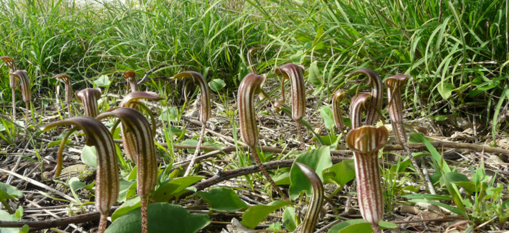
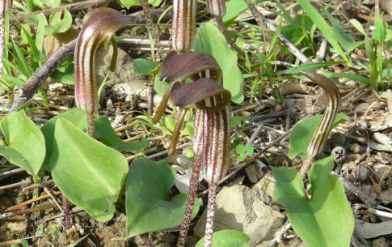
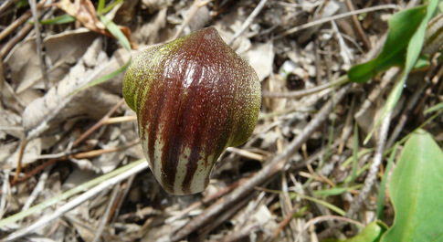
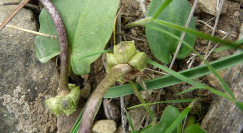
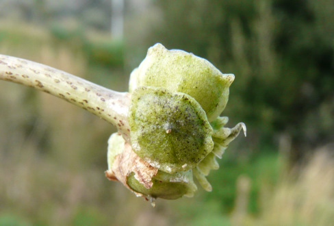
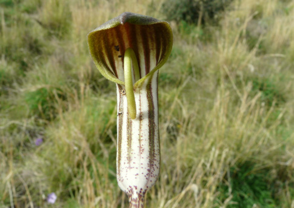
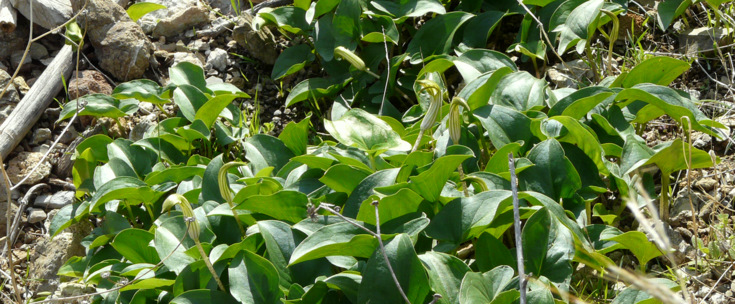
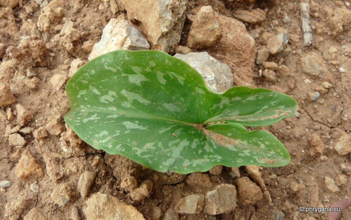

| PHRYGANA | Fauna | Flora | Galles | liste des espèces |
contact -
info - commentaires phrygana1 (at) gmail.com |
| Particularités crétoises | nouveautés | Mines | ressources naturelles |
| Arisarum vulgare TARG. TOZZ. |
| 162 | Flora | ARACEAE | Arisarum MILL. |
 Arisarum vulgare Agios Giorgos (Melambes) 20 décembre 2009 |
| le Capuchon-de-moine -- Friar's cowl | |
| Feuilles: basilaires (larges de 3 - 12 cm, longues de 4 - 15 cm) longuement pétiolées, ovales-cordiformes, vert franc, parfois maculées de blanc ou de vert foncé. | |
| Fleurs: inflorescence longuement pédonculée; spathe étroite, 4 - 5 cm, vert à brun chocolat, souvent lignée et picotée, terminée en capuchon courbé, tubulaire dans le bas; spadice libre, verdâtre, saillante et recourbée vers l'avant; fleurs monoïques (mâles réduites à quelques étamines au filet court)(femelles au fond de la spathe à style conique) | |
| Fruit: une tête verte à 2 - 8 graines | |
| Hauteur: 10 - 30 cm | Type biologique: géophyte rhizomateux |
| Floraison: octobre novembre décembre janvier février mars | |
| Altitudes: 0 - 850 m | |
| Statut en Crète: indigène -- native | |
| Biotopes en Crète: olivaies, phrygana, garrigue, pelouses sèches, lieux rocailleux. | |
| Distribution: région Méditerranéenne européenne, Asie mineure, Proche-Orient, Maroc | |
| Espèce héliophile | |
  Arisarum vulgare Agios Giorgos (Melambes) 20 décembre 2009 |
|

 Arisarum vulgare Agios Giorgos (Melambes) 28 février 2009 |
|
 Arisarum vulgare Agios Giorgos (Melambes) 20 décembre 2009 |
|
 Arisarum vulgare Agios Giorgos (Melambes) 13 décembre 2009 |
|
 Arisarum vulgare Louro (Agios Pavlos) 28 novermbre 2010 |
| 06 juin 2012 |
| © paul fontaine -- © Phrygana.eu 2007 -- 2013 |